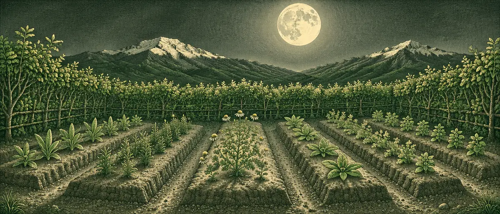
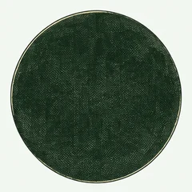
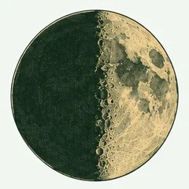
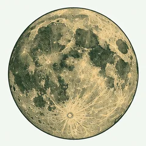
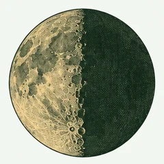

Maqueta A · calendario · evolución: luna grabada en el día de cada fase principal y filtro como sello «recomendado»
La fase de cada día y lo que la práctica recomienda hacer en el huerto. Elige una actividad para ver sus días.

Actividad: Siembra y ritual de siembra · Recomendado marca los días de luna creciente y llena

Luna nueva · 02:04
Cuarto creciente · 06:50

Fuente: Definición del proyecto; MSP (2017), lineamientos de huertos medicinales, Anexo 4.